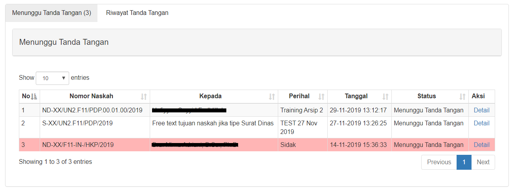

Cipta Naskah Dinas Elektronik¶
Andieni, membantu anda dalam membuat naskah dinas sesuai dengan format Tata Naskah Dinas Universitas Indonesia. Silahkan login pada portal Andieni

Catatan
Pastikan bahwa anda telah mendaftarkan akun SSO agar dapat menggunakan Andieni
Pilih Menu Cipta Naskah
Pilih tombol Tambah Naskah Dinas Baru
Saat ini tersedia 2(dua) template Naskah Dinas dari 19 Jenis Naskah Dinas di lingkungan UI, yaitu Nota Dinas dan Surat Dinas. Isikan seluruh data yang diperlukan untuk generate naskah dinas anda.

Form diatas terdiri dari beberapa field dan tombol. Berikut deskripsi dari masing masing field tersebut.
Surat Dinas / Nota Dinas |
Keterangan |
|---|---|
Nomor Naskah |
otomatis ter-generate oleh Andieni |
Jenis Naskah |
Pilih template Surat Dinas atau Nota Dinas) |
Perihal |
Text field yang dapat anda ketik |
Tujuan |
pastikan tujuan anda telah menggunakan Andieni |
Sifat |
Rahasia, Sangat Rahasia, Biasa |
Derajat |
Segera, Sangat Segera, Biasa |
Tembusan |
pastikan tujuan anda telah menggunakan Andieni |
Kode Klasifikasi |
Cukup pilih indeks kegiatan kode dibuat oleh Andieni |
Approver |
Pemberi paraf |
Pejabat Penandatangan |
Pejabat penandatangan dengan eSign |
Upload Lampiran |
format .pdf maks. 5MB |
Isi Naskah |
konten dari naskah dinas anda |
Nomor Naskah | Nomor naskah otomatis ter-generate oleh sistem Andieni dengan notasi khusus.
Jenis Naskah | Dropdown saat ini terdiri dari Surat Dinas dan Nota Dinas.
Perihal | Textfield yang dapat anda ketikkan perihal dari naskah.
Peringatan
hindari penulisan perihal dengan judul umum seperti undangan, rapat, karena ini tidak menggambarkan konten naskah.
Catatan
Contoh yang benar penulisan perihal antara lain Rapat RKA Tahun 2020 ; Nara Sumber Seminar Nasional Kewirausahaan ; Sosialisasi Naskah Dinas Elektronik.
Approver | Dropdown yang dapat anda ketikkan jabatan atau nama approver untuk
Sifat | Dropdown yang muncul dan wajib diisi apabila jenis naskah Surat Dinas.

Tanggal | Otomatis ter generate pada hari naskah dibuat.
Upload Lampiran | Field untuk menyisipkan lampiran (jika ada)

Tujuan Naskah | Apabila jenis naskah Surat Dinas, field akan berupa textfield yang dapat anda ketikkan secara langsung.
Apabila jenis naskah Naskah Dinas, field akan berupa Dropdown yang dapat anda ketikkan jabatan atau nama tujuan untuk memberikan sugesti pilihan. Tujuan nas kah dapat dipilih lebih dari satu.
Tembusan | Dropdown yang dapat anda ketikkan jabatan atau nama tembusan untuk memberikan sugesti pilihan. Tembusan dapat dipilih lebih dari satu.
Kode Klasifikasi | Dropdown yang dapat anda ketikkan kode klasifikasi u ntuk memberikan sugesti pilihan.
Peringatan
kode klasifikasi mengikuti kegiatan atau proses bisnis yang anda lakukan. Jika menulis klasifikasi dengan kata "undangan" maka tidak akan ditemukan di kode klasifikasi.
Pejabat penandatangan | Dropdown yang dapat anda ketikkan jabatan atau nama pejabat untuk memberikan sugesti pilihan. Penandatangan hanya dapat dipilih satu.
Derajat | Dropdown yang menentukan berapa lama naskah harus ditandatangani.
Isi Naskah | Field berupa text editor untuk melakukan formatting isi naskah.
Catatan
paragraf baru mohon gunakan shift + enter untuk spasi (1 line single spacing), jika menggunakan enter (maka akan menjadi 2 line spacing)
Approver - Paraf¶
Pembubuhan paraf pada sebuah naskah dinas bersifat opsional yang berarti tidak semua naskah dinas membutuhkan paraf dan wajib dibubuhan paraf sebelum ditandatangani.
1. Tambahkan Approver¶
Andieni memiliki fitur agar naskah dinas yang membutuhkan persetujuan (approver) disediakan mekanisme secara sistem melalui field Approve Naskah. Apabila saat membuat naskah, diisikan nama Pejabat pembubuh paraf maka secara sistem Pejabat tersebut dapat melihat naskah apa yang perlu di paraf melalui menu Approve Naskah
Approver dapat diisi lebih dari 1 pengguna secara paralel
Pada menu Approve Naskah, terdapat dua (2) tab, yaitu Menunggu Persetujuan dan Riwayat Persetujuan. Pada tab Menunggu Persetujuan muncul list naskah yang akan disetujui oleh user.
Peringatan
Baris naskah akan berlatar belakang warna merah jika naskah surat belum disetujui namun telah melewati batas waktu persetujuan naskah. Batas waktu persetujuan naskah menyesuaikan dari derajat.
Pada tab Riwayat Persetujuan muncul list naskah yang sudah pernah disetujui oleh user.
2. Detail Naskah¶
Halaman Detail Naskah dapat dibuka melalui link Detail pada kolom Aksi. Halaman detail berisi detail naskah dan daftar naskah yang belum disetujui.
Pada form persetujuan terdapat 3 tombol yaitu tombol Setuju, Tidak Setuju, dan Koreksi.
Ketika user menekan tombol Tidak Setuju maka halaman detail ak an menampilkan keterangan : “Anda telah tidak menyetujui surat ini.”
Catatan
Naskah yang tidak disetujui akan kembali kepada konseptor naskah.
3. Tombol Cipta Naskah¶
Tanda Tangan eSign¶
Ketika naskah disetujui oleh semua Approver, status naskah akan berubah menjadi: “Menunggu Tanda Tangan”. Naskah akan muncul pada menu Tanda Tangan Naskah pada tab Menunggu Tanda Tangan pada akun user Pejabat Penandatangan terkait.
Peringatan
Ketika salah satu dari Approver tidak menyetujui naskah.status naskah akan berubah menjadi : Tidak disetujui.
Pada tab Riwayat Tanda Tangan muncul list naskah yang sudah pernah ditandatangani oleh user.
Pada form penandatanganan terdapat 3 tombol yaitu tombol Tanda Tangan, Tidak Tanda Tangan, dan Koreks Koreksi.
Catatan
Setelah pimpinan menandatangani Nota Dinas Elektroni, maka surat akan langsung terdistribusi ke tujuan naskah. Penerima naskah dapat melihatnya pada kolom Menu Halaman Naskah -> Naskah Masuk Internal
Ketika user menekan tombol Tidak Tanda Tangan maka halaman detail akan menampilkan keterangan : “Anda telah tidak menandatangani surat ini.”
Notasi & Nomor Naskah Dinas¶
Naskah dinas yang diciptakan melalui modul cipta naskah akan ter-generate secara automatis menjadi bentuk file digital dalam format .pdf .
Catatan
Nomor pada konsep atau draft naskah dinas masih berupa XX hingga ditandatangani oleh pimpinan penandatangan.
Peringatan
Tanggal pada surat akan berubah menyesuaikan dengan kapan dokumen tersebut ditandatangani secara elektronik. Bukan pada saat surat tersebut dikonsep.